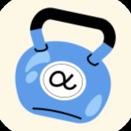
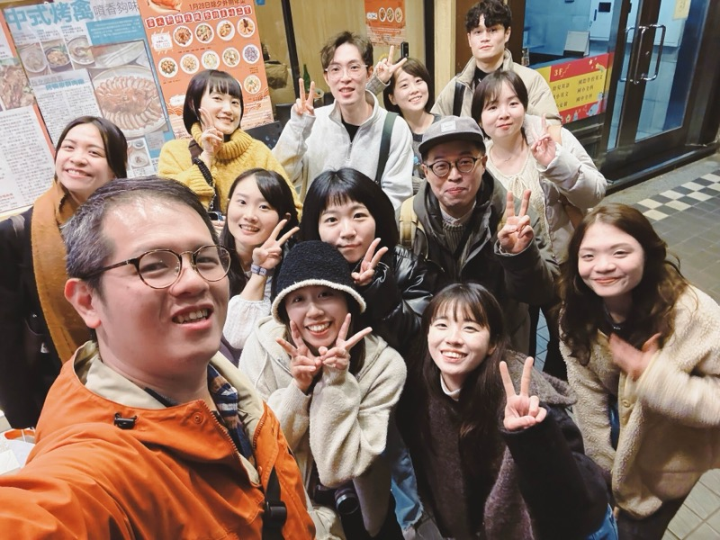
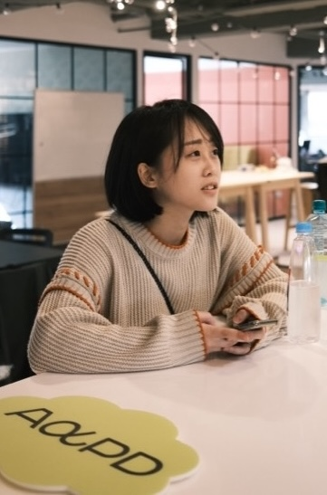
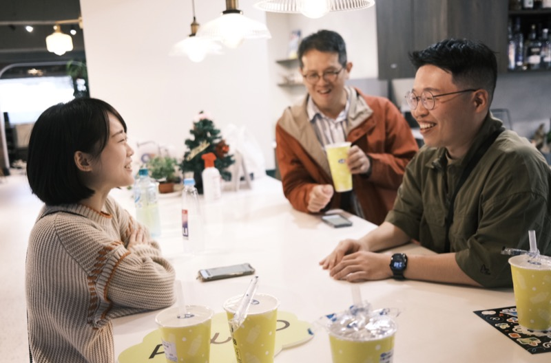
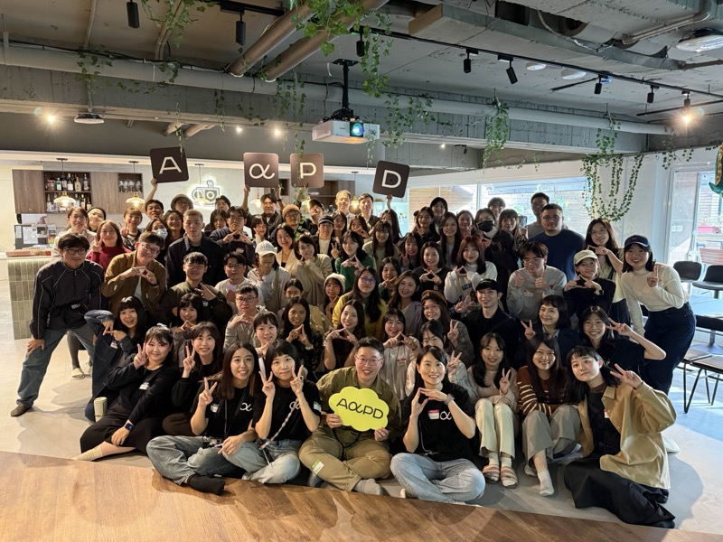
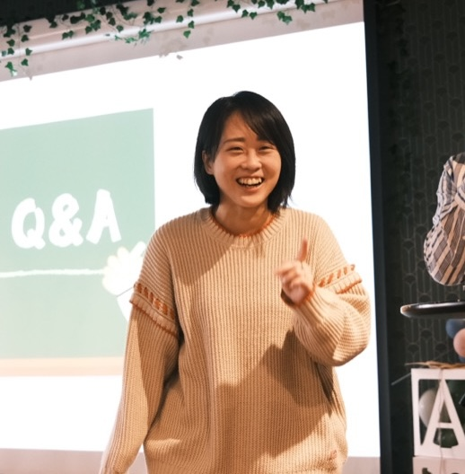
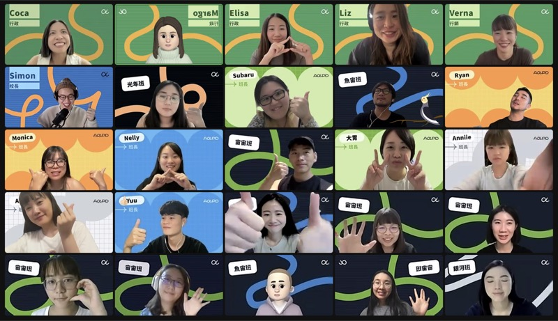

設計教育經歷
2026.07 – 目前

產品人成長圈教練
AAPD (As A Product Designer) 產品設計學院｜兼職
透過日常思考引導、每週重點訓練拆解，以及每月個案診斷，從不同專長視角協助學員突破盲點、陪伴學員建立持續成長的節奏。
2025.06 – 目前
職涯陪跑教練
AAPD (As A Product Designer) 產品設計學院｜兼職
提供一對一個人化指導，幫助學員不只解決短期的困惑與挑戰，同時探索長期成長目標。已累積 10+ 以上學員諮詢經驗。
2023.10 – 目前
產品設計助教
AAPD (As A Product Designer) 產品設計學院｜兼職
擔任《產品設計挑戰賽》及《UI 設計線上實戰營》的產品設計助教，協助學員作業批改、幫助學員排除遇到的困難、分享對應設計資源以及分享自身經驗。已累積協助 200+ 以上學員。
2025.01 – 2025.06
UI/UX 組業師
XChange 互聯網大學｜兼職
我在第八屆 XChange 互聯網大學擔任 UI/UX 組業師，提供大學生和研究生一對一、一對二的諮詢，解惑他們在實習和專案中遇到的問題。
學員怎麼說
大胃不只能一針見血地指出核心問題，還會用細膩的眼光幫助我們看見畫面裡被忽略的細節。面對任何提問也十分願意耐心傾聽、細心解答，從整體產品思路到細微的視覺元素都照顧到，能感受到他滿滿的真心以及想讓學員成長的熱忱。
大胃總能在短時間內幫我們突破盲點，還會耐心帶著我們聚焦目標。快狠準又帶點幽默，讓緊張的專案過程多了不少歡笑聲。在他的帶領下，我們不只拿下優秀專案的頭銜，也在過程中培養了更全面的設計思考能力。
大胃教練的回饋讓我更清楚作品集架構與敘事重點，也釐清設計師定位與未來方向。過程中激發了我對 UX 的熱情，並開始思考職涯下一步，受益良多。
大胃助教滿滿的愛的教育，給我們情緒價值和明確方向，在資訊炸裂的 Figma 裡，是你的回饋讓我們找到前進的路。
大胃教練很清楚的跟我說可以改進的部分以及新手容易犯的錯誤，對轉職者以及新手都是很好的提點！針對事前表單內容也很清楚的了解，在對談時更多了深入的提問，有助於釐清我自身的問題。
很感謝大胃超用心的 Design Review，針對我提出的問題都一一超詳解，除了點出產品目前的問題，也提供很多發想讓我腦洞有被打開，諮詢結束後經過反覆消化，也發現自己在專案執行和思考上的盲點，真的收穫很多～
教學現場






歡迎與我聯絡
yuhsuanwang531@gmail.com